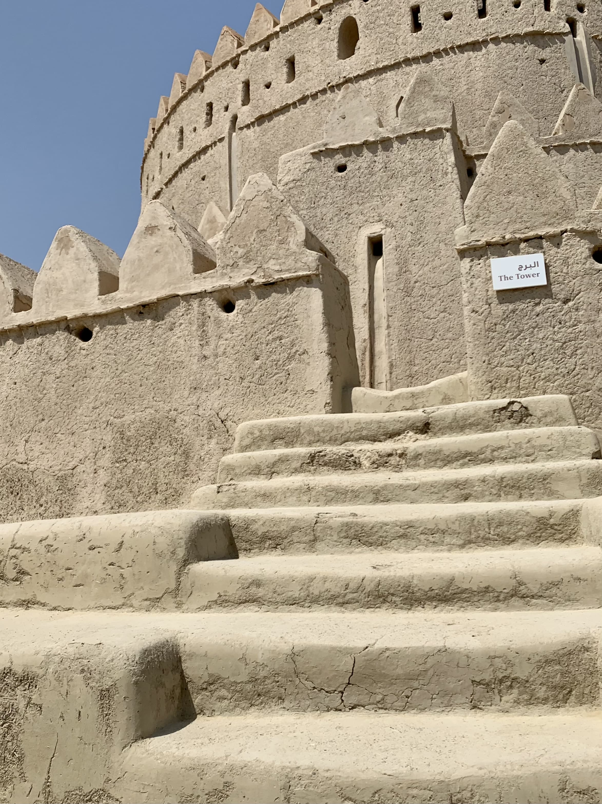
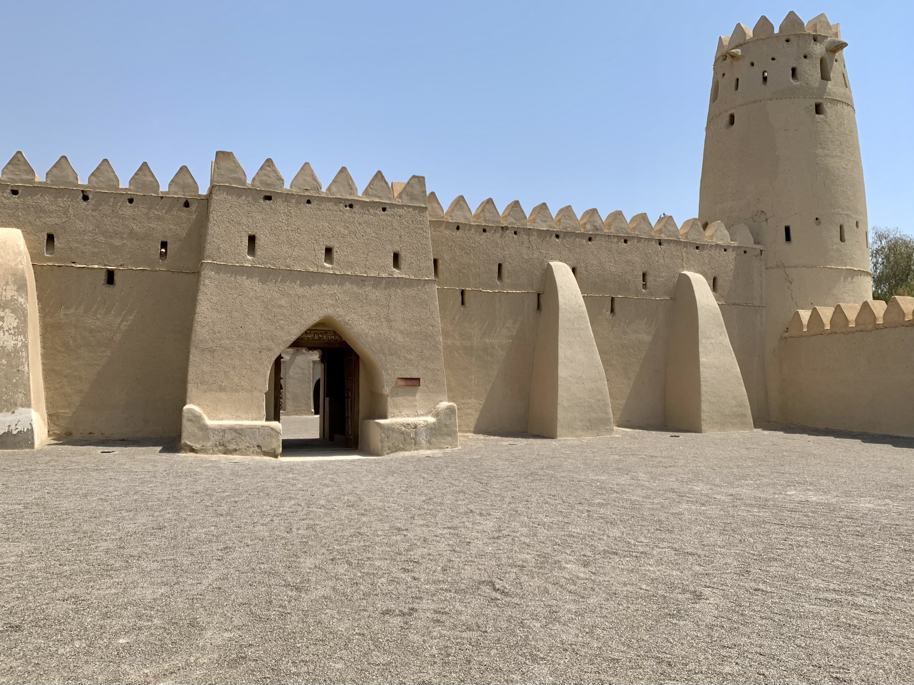
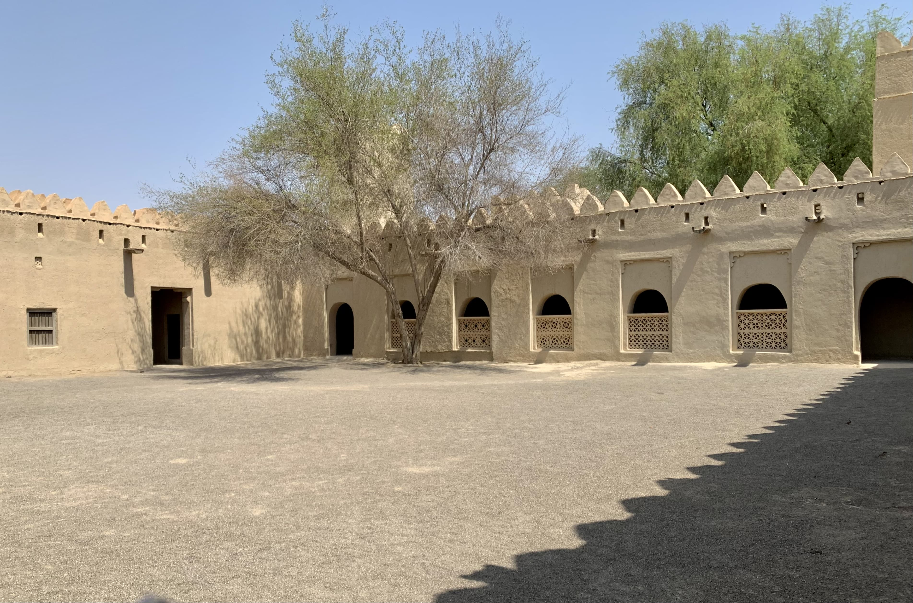

قلعة الجاهلي إحدى أكبر القلاع في مدينة العين. شادها الشيخ زايد الأول ابن خليفة عام 1891م وفُرغ من بنائها عام 1898م. القلعة كبيرة محصنة، يسار المدخل يقع معرض مبارك بن لندن (ولفرد ثيسجر)، وفي الشمال الشرقي يقع الحصن القديم، وفي الجنوب يقع البرج الدائري.
البرج

الدرج المؤدي إلى الطابق الثانيباب إحدى الغرف في الطابق الثاني.إحدى الغرفتين في الطابق الثاني، ويبدو من إحدى الجدران يسار المدخل أن الغرفة كانت مصبوغة بالطلاء الأزرق.ممر بين الغرفتين في الطابق الثاني. والطابق الثاني أقصى ما يصل إليه الزائر.قرب البرج يظهر البناء الأصلي للجدار من اللبن الطيني، ويظهر باب قديم مسدود باللَّبِن.الباب القديم، وأساسات مدخله.
الحصن القديم
للحصن ثلاثة أبراج، في كل زاوية سوى الزاوية الشمالية الشرقية.

كُتب أعلى الباب هذان البيتان اللذان يؤرخان تاريخ الفراغ من بناء الحصن، وهما:
فَتْحُ بابِ الخَيْرِ في بابِ العُلَا
حَلَّ فيه السَّعْدُ بِالْعَلْيَا المُنِيفَهْ
***
فَتَهَانِي العِزِّ قَالَتْ أَرِّخُوا:
دَار جدٍّ شَادَ زايدْ بنْ خليفَهْ
والشطر الأخير يتضمن تاريخ الفراغ من بناء الحصن، وهو سنة 1316هـ، فباستخدام حساب الجُمَّل، وهو أن يُجعل لكل حرف أبجدي قيمة، إن جمعنا القيم في حروف الشطر الأخير يكون المجموع 1316.
تبدو أبواب الحصن محصنةً منيعة؛ فهي مغطاه بالأشواك الحديدية لأغراض دفاعية.الغرفة اليسرى عند مدخل الحصن، ويمين المدخل هناك غرفة مشابهة لها.

البئر في الزاوية الجنوبية الغربية من الحصن.فرن في القلعة.
بعض النقوش التي حُفرت على شُرُفات الحصن.
معرض مبارك ابن لندن
أُنشئ هذا المعرض الدائم في الزاوية الشمالية الغربية من القلعة. تُعرض فيه بعض المقتنيات والصور التي صوَّرها الرحالة ويلفرد ثيسجر عندما قدِم إلى العين في أواخر الأربعينات.
بعض المقتنيات المطابقة لما استخدمه ويلفرد في رحلته. المحزم وأسفله فرو الخروف المسمى بالجاعد. للمحزم شِقَّان يسميان بالبنايد.خنجران. الخنجر الأيمن يسمى خنجرًا ساحليًا؛ نسبة لساحل عمان -اسم الإمارات سابقًا-، تتميز هذه الخناجر بصغر جرابها. وتظهر فوقها التفق أي البندقية، وهي مغطاة بجراب جلدي.قربة للماء تسمى بالسعن. مصنوعة من جلد الماعز أو الضأن، وتحافظ على برودة الماءشداد الإبل، وهو كالسرج للفرس. يتكون من البدود، مفردها البداد، وهو نسيج محشيٌّ بالليف، يحمي ظهر المطية من الاحتكاك. والظلْفَه، وهي تتكون من أربع قطع تُصنع من خشب السدرالمحقبة، وهي حزام للجمل. وهي شريط صوفي يستخدم مثبتًّا للمعدات على ظهر الناقة، كالقِراب والجاعد وغيرها. وجنبها عصا خيزران، تستخدم للاتكاء وسوق النياق ومآرب أخرى.كاميرا Leica ألمانية المنشأ، الإصدار الثالث. استخدمت في ثلاثينات وخمسينات القرن الماضي. استخدمها ويلفرد لتوثيق رحلاته. المسجد القديم جنوب الحصن. مبني على الطراز التقليدي.